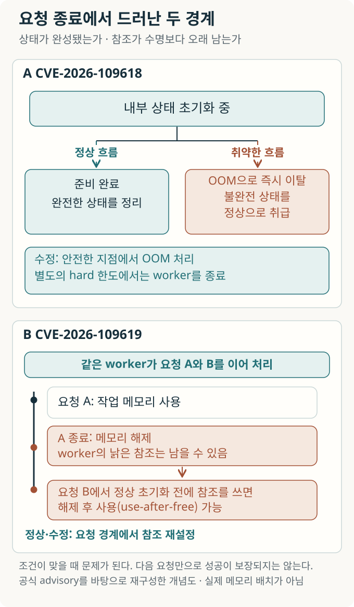
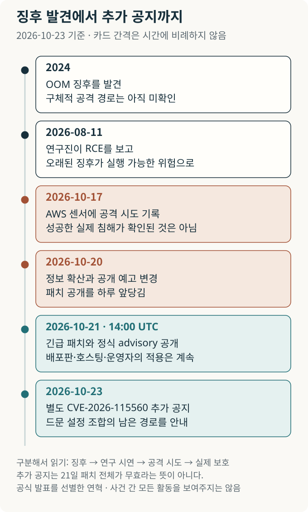
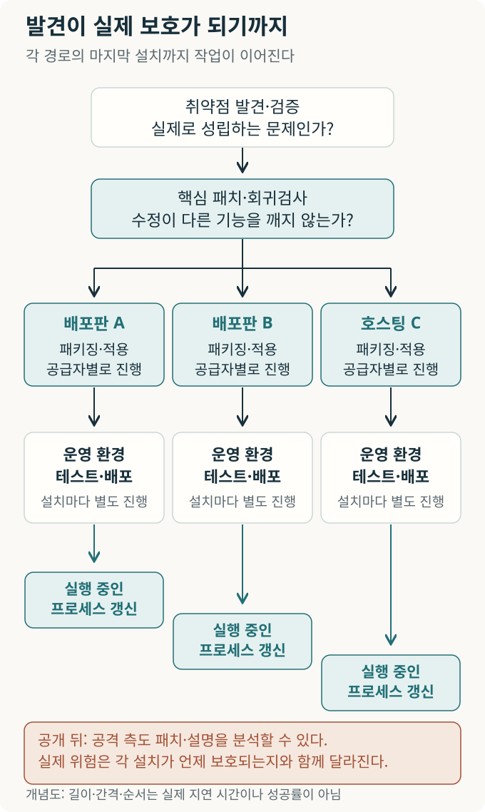

AI 시대의 보안 전환: PHP 사태에서 새 기반의 설계까지
AI가 오래된 결함을 실제 공격 가능성으로 연결했다. PHP의 긴급 수리에서 출발해, 언제 기존 기반을 떠나야 하는지, 새 보안 표준과 에이전트의 권한, 기업 서비스의 역할은 어떻게 달라져야 하는지 묻는다.

내용 살펴보기
웹사이트의 로그인 화면이 제대로 잠겨 있어도, 그 화면을 만들어 주는 소프트웨어가 먼저 무너지면 어떻게 될까.
2026년 10월 21일 공개된 PHP 보안 공지는 이 질문을 현실로 만들었다. PHP는 서버에서 게시물을 가져오고 장바구니를 계산한 뒤 브라우저에 보낼 페이지를 만드는 언어다. 이번 결함은 개별 쇼핑몰의 로그인 코드보다 아래, 그 코드를 실행하는 PHP 엔진에 있었다. PHP 엔진을 Apache 웹서버에 모듈로 붙이는 mod_php 구성에서는 애플리케이션 코드가 시작되기 전에도 로그인 없는 원격 코드 실행(remote code execution, RCE)이 가능하다고 PHP가 밝혔다. 웹사이트 개발자가 자기 코드를 잘 작성했다는 사실만으로 피할 수 있는 문제는 아니었다. [1, 2]
AI가 이 오래된 기반의 취약점을 찾아내는 데 참여했다는 소식은 곧 거대한 경고로 번졌다. 그러나 이 사건을 이해하려면 ‘찾았다’는 말부터 나누어 보아야 한다. 이상한 오류를 알아챈 것, 공격이 성립함을 입증한 것, 공격 시도를 관찰한 것, 실제 침해를 확인한 것은 서로 다른 사건이다. 그 사이에는 연구자의 실험과 유지보수자의 판단, 배포판의 패키지와 운영자의 서버가 있다.
이 리뷰의 질문은 두 단계로 이어진다. AI가 결함을 빨리 찾게 된 뒤, 인터넷도 그 속도로 고칠 수 있는가. 그리고 우리는 언제까지 같은 기반을 고쳐 써야 하는가. 바람이 거세질 때 집의 틈을 막는 일은 급하다. 그러나 수리를 반복하는 비용과 위험이 커진다면, 어떤 땅과 재료로 옮겨 새로 지을지도 물어야 한다. PHP의 실패 처리에서 출발해 보안의 가정과 표준, 그 전환을 돕는 서비스까지 살펴보려는 이유다.
실패한 요청은 어떻게 끝나야 하는가
브라우저가 페이지 하나를 요청하면 서버는 그 요청에 필요한 작업 공간을 마련한다. 처리가 끝나면 작업 공간을 반납하고 다음 요청을 받는다. 이 일을 맡는 실행 프로세스를 워커(worker)라고 부른다. 워커 하나가 여러 요청을 차례로 처리할 수 있으므로, 프로세스의 수명과 각 요청에 속한 메모리의 수명은 다르다.
문제는 일이 정상적으로 끝나지 않을 때다. PHP의 메모리 부족(out-of-memory, OOM)은 서버의 물리 메모리가 전부 바닥났을 때만 생기는 일이 아니다. 한 요청에 허용한 memory_limit에 닿아도 발생한다. 기존 엔진은 이때 실행하던 지점에서 급히 빠져나올 수 있었다. 내부 자료를 절반만 준비한 순간이라면, 나중에 요청을 정리하는 코드가 불완전한 자료를 완성된 것으로 취급할 수 있다. 이것이 첫 번째 취약점 CVE-2026-109618의 핵심이다. [2, 4]
두 번째 취약점 CVE-2026-109619에서는 요청이 남긴 상태의 수명이 어긋난다. 요청 A에 속한 메모리를 반납했는데 워커에 남은 참조가 여전히 그 자리를 가리킬 수 있다. 같은 워커가 요청 B를 받았을 때, 정상적인 초기화보다 먼저 그 참조를 사용하면 이미 해제한 메모리를 유효한 자료처럼 다루게 된다. 이를 해제 후 사용(use-after-free)이라고 한다. 두 취약점은 관련되어 있지만, 두 번째 문제의 중단 원인은 OOM에만 한정되지 않는다. [3]
책상 위에서 일을 마친 뒤 메모지를 버렸는데, 다음 업무의 색인에는 버린 메모지의 위치가 남아 있는 상황을 떠올릴 수 있다. 그 자리에 다른 종이가 놓였다면 색인을 믿고 엉뚱한 내용을 읽게 된다. 실제 프로그램에서는 주소를 따라 자료를 읽고 고치므로, 이런 수명 불일치가 메모리 손상으로 이어질 수 있다. 비유는 ‘자리의 유효기간’만 설명한다. 오래된 참조가 하나 남았다고 자동으로 공격에 성공하는 것은 아니다.
그림의 위쪽에서는 준비가 중단된 자료를 정리 단계에서 사용하는 관계를, 아래쪽에서는 요청 A의 메모리 수명이 끝난 뒤 요청 B가 남은 참조를 사용하는 관계를 읽으면 된다. 두 경우 모두 안전해야 할 요청의 경계가 논점이다.

수정 방향도 이 관계에서 이해할 수 있다. 설정한 메모리 한도를 넘으면 진행 중인 내부 연산을 곧바로 끊는 대신, 가상머신의 안전한 지점에서 오류를 처리한다. 더 높은 강제 한도까지 넘으면 워커를 즉시 종료한다. 요청이 끝난 뒤 남아서는 안 되는 내부 상태도 재설정한다. 단순히 메모리 한도를 없애거나 오류 메시지를 숨긴 해결이 아니다. ‘실패해도 다음 작업을 오염시키지 않는다’는 조건을 엔진 안에서 회복하는 일이다. [2–4]
공격이 성공했을 때 가능한 것은 웹 워커의 권한으로 코드를 실행하는 것이다. 곧바로 운영체제의 최고 관리자 권한을 얻는다는 뜻은 아니지만, 워커가 접근할 수 있는 데이터와 비밀정보만으로도 피해가 클 수 있다. 엔진을 별도 워커 프로세스로 운영하는 PHP-FPM도 점검 대상이다. FPM에서 검증된 경로에는 적합한 애플리케이션 동작이 필요하므로, mod_php의 앱 실행 전 실증을 모든 구성으로 확대할 수는 없다. [2, 3, 5]
AI가 바꾼 것은 오래된 징후의 의미였다
이 결함의 역사를 ‘사람이 수십 년 동안 아무것도 보지 못하다 AI가 처음 발견했다’고 쓰면 중요한 부분이 사라진다. PHP 재단에 따르면 OOM 문제의 징후는 2024년 감사 후속 작업에서 이미 파악됐다. 하지만 구체적인 원격 공격 경로는 확인되지 않았고, 여러 수정안에는 호환성·서비스 거부·외부 확장 모듈 변경이라는 부담이 있었다. 재단은 인력과 의사결정 구조 때문에 수리가 지연됐음을 인정했다. [5]
2026년에는 이 징후가 새로운 증거를 얻었다. Calif는 7월 말 시작한 감사에서 과거 PHP 취약점에 관한 연구자의 지식을 출발점으로 질문을 좁혀 갔다고 설명한다. 8월 11일에는 같은 OOM 원인에서 원격 코드 실행을 보고했다. Wiz도 별도로 여러 경로의 실증과 수정을 도왔다. 기존 결함이 실제 공격으로 이어지는 연결을 보여 주면, 유지보수자가 매기는 긴급성과 수정의 우선순위가 달라진다. [5, 6, 7]
OpenAI는 Calif가 GPT-5.6 Sol을 활용했다고 밝혔다. Wiz는 자체 도구와 Gemini 4 Argon, GPT-5.6 Sol을 함께 썼으며 분석·반복 실험·공격 검증·패치 확인에 모델이 기여했다고 보고한다. 이때 AI는 오류를 가리키는 문장을 쓰는 데 그치지 않고 연구자가 가설을 좁히고 시험하는 작업에 들어간다. 복잡해서 실용화하기 어려웠던 공격을 더 적은 노력으로 시험할 수 있게 된다면, 방어자가 오래된 코드를 다시 조사할 이유도 커진다. [7, 8]
다만 공개된 사례 설명은 통제된 모델 성능 실험이 아니다. 어떤 모델을 같은 시간·비용으로 비교했는지, 실패한 시도가 몇 번이었는지, 전문가가 투입한 총시간이 얼마인지는 확인되지 않는다. Wiz의 ‘한 연구자가 한 주에 한 일’과 ‘과거라면 팀에 수개월 걸렸을 일’을 비교한 표현도 동일 조건의 측정값으로 읽을 수 없다. 확인할 수 있는 것은 모델과 전문가가 결합한 작업에서 실제 취약점과 패치가 나왔다는 것이다. 특정 모델의 독자적 기여율이나 누구나 같은 공격을 할 수 있다는 결론은 그보다 강한 주장이다. [6–8]
여기서 AI 위험의 성격이 선명해진다. 이번에는 AI가 새로 작성한 PHP 코드가 취약했던 것이 아니다. 널리 신뢰하고 쓰던 기존 기반에서, AI를 활용한 조사가 취약성의 실용적인 문턱을 바꾼 사건이다. 공격과 방어 모두 이 능력을 이용할 수 있다. 어느 쪽의 순이익이 더 큰지는 모델의 발견 능력만으로 정해지지 않는다.
헤드라인의 숫자를 다시 읽으면
보도는 이 변화를 압축해 전달했다. AP는 광범위한 인터넷 기반의 문제로, Axios는 AI의 발견을 전면에 놓았다. 과학 리뷰가 보탤 일은 큰 숫자가 무엇을 세었는지 되묻는 것이다. [14, 15]
| 널리 퍼진 표현 | 확인할 수 있는 내용 | 그 숫자로 알 수 없는 것 |
|---|---|---|
| 웹의 약 70% | W3Techs의 10월 23일 조사에서 서버 측 언어를 식별한 사이트 중 PHP 사용 비중은 69.3%였다. [9] | 공격 가능한 설치·서버 수, 미패치율, 실제 침해율 |
| 심각도 9.2 | 두 공식 권고의 CVSS v4.0 심각도 점수다. 공격 복잡도와 추가 조건도 함께 표시된다. [2, 3] | 공격 성공 확률 92%, 전체 피해의 크기 |
| 공개 뒤 15분 내 대량 공격 | 패치 전 보도에 인용된 전망이었다. Sansec은 22일 대량 악용 가능성에 대한 초기 평가를 낮췄다. [11, 16] | 실측한 대량 침해 시작 시각 |
| 공개 전 공격 | AWS는 17일부터 센서에 들어온 공격 시도를 보고했다. [10] | 실제 서버에서의 성공 여부, 공격자의 AI 사용 여부 |
이 구별은 위협을 작게 보려는 장치가 아니다. 예컨대 공개된 불완전한 공격 코드가 기본 설치에서 실패한다고 해서 연구진이 검증한 공격도 불가능한 것은 아니다. 반대로 연구진이 여러 조건에서 성공했다고 해서 인터넷의 모든 PHP 설치에 같은 입력이 통하는 것도 아니다. 취약점의 존재와 공격의 이식성, 실제 피해는 따로 측정해야 한다. Sansec의 수정된 평가는 바로 그 간격을 보여 준다. [11]
기준일 현재 검토한 자료만으로 전 세계의 성공한 침해 건수나 AI가 예방한 피해액을 계산할 수는 없다. 그런 수치를 비워 두는 편이 앞으로 나오는 관측을 제대로 읽는 데 도움이 된다.
공개일보다 먼저 움직인 시계
보안 취약점은 발견하자마자 모든 세부 내용을 공개하기 어려운 경우가 있다. 개발자가 먼저 고치고 배포판과 호스팅 회사가 업데이트를 준비할 시간을 확보하는 조정된 취약점 공개(coordinated vulnerability disclosure)가 그래서 필요하다. 동시에 비밀을 아는 사람이 늘어날수록 정보가 새거나 같은 결함이 다시 발견될 가능성도 생각해야 한다. OpenAI가 제안한 대응 절차 역시 유지보수자가 중심이 되어 필요한 조직과 먼저 준비한 뒤 공개하는 방식이다. 이는 이번 대응에 참여한 조직의 제안이며, 효과가 독립 평가된 보편적 표준은 아니다. [8]
PHP 재단은 정보 확산으로 원래 22일이던 공개를 21일로 당겼다고 설명했다. 준비된 수정이 있어도 배포 패키지가 없으면 많은 운영자는 즉시 적용하기 어렵다. 공개를 앞당기면 비밀 유지의 부담은 줄지만, 준비가 덜 된 사용자에게 남는 시간도 줄어든다. [5]
더 중요한 관측은 공개일 바깥에 있다. AWS는 공격 관측용 유인 시스템인 MadPot에서 10월 17일의 시도와 21일 공개 전의 추가 시도를 확인했다고 밝혔다. 실제 운영 환경에서도 성공했을지는 불명이라고 명시했다. 이 기록은 8월의 AI 보조 발견보다 공격자가 먼저였다는 증거가 아니다. 그러나 정식 공개 전까지 공격자가 몰랐다고 가정할 수 없다는 증거는 된다. 정보가 어떻게 전달됐는지, 독립 재발견이었는지, 공격자가 AI를 썼는지는 이 관측만으로 알 수 없다. [10]
다음 그림은 날짜를 하나의 순서로 정리한다. 위협의 시계가 21일 공개와 함께 처음 켜진 것으로 읽지 않는 것이 중요하다. 마지막의 23일 공지도 별도로 남겼다. 최초 패치의 배포와 후속 경로의 검토는 겹쳐 진행될 수 있기 때문이다.

공개를 최대한 늦추거나 최대한 서두르는 한 가지 원칙으로 이 긴장을 없앨 수는 없다. 어떤 정보가 이미 노출됐는지, 실제로 작동하는 공격이 확인됐는지, 누가 아직 배포를 준비 중인지가 판단을 바꾼다. AI가 같은 단서를 재해석하는 비용을 낮출수록, 방어자가 확보한 시간도 계속 확인해야 하는 자원이 된다.
발견이 늘면 수리 대기열도 줄어들까
보안팀에 보고서가 도착했다고 일이 끝나지는 않는다. 먼저 재현해야 하고, 기존 보고와 같은 원인인지 가려야 한다. 실제 위험을 판단하고, 수정이 정상 동작을 깨뜨리지 않는지도 확인해야 한다.
PHP 보안팀은 10월 14일 업무 기록에서 7월 1일 이후 CVE 15건을 공개했고, 비취약점·중복·재현 불가 등으로 보고 106건을 닫았다고 밝혔다. 106건 모두 AI가 만든 오탐이었다는 통계는 아니다. 팀은 AI로 보고 작성이 쉬워져 유입이 늘었으며, 대응하는 쪽에서도 AI를 재현 검토와 같은 원인의 보고 묶기에 쓴다고 설명한다. 최종 판정과 패치 작성·검토는 사람이 맡는다. [12]
여기에는 대기열의 간단한 원리가 있다. 들어오는 일이 늘어도 확인하고 끝내는 능력이 함께 늘지 않으면 기다리는 일은 쌓인다. 새로운 보고가 실제 결함이어도 수정 인력이 부족하면 밀리고, 잘못된 보고여도 이를 가리는 시간이 든다. PHP 자료만으로 앞으로 대기열이 얼마나 늘어날지 계산할 수는 없다. 다만 보고를 더 쉽게 만드는 일과 보고를 더 빨리 끝내는 일은 서로 다르다.
그래서 AI의 보안 효과를 ‘발견한 취약점 수’로만 평가하면 병목을 놓친다. 재현 가능한 유효 보고가 늘었는지, 검토자의 시간이 줄었는지, 회귀 오류 없이 패치가 나왔는지, 실제로 보호된 설치가 늘었는지를 이어서 보아야 한다. 도구를 지원하는 예산과 코드를 오래 이해할 사람을 지원하는 예산이 함께 필요하다는 논의도 여기서 나온다.
패치를 냈다는 말과 보호됐다는 말 사이
핵심 코드를 고친 뒤에도 경로는 길다. 배포판은 자기 지원 버전에 수정을 옮기고, 호스팅 회사는 여러 고객 환경을 시험한다. 운영자는 영향을 받는 설치를 찾고 업데이트하며, 실행 중인 프로세스가 새 코드를 쓰는지도 확인해야 한다. NCSC는 PHP를 포함한 제품과 내부 시스템까지 식별하고 공급자 업데이트를 따라가도록 권고했다. 웹 방화벽은 일부 요청을 막아 시간을 벌 수 있지만 엔진 수정을 대신한다고 볼 수 없다. Cloudflare의 방어 배포도 이런 중간 단계에 해당한다. [13, 17]
그림의 화살표를 발견에서 각 경로의 실행 중 프로세스 갱신까지 따라가 보자. 논문이나 보도자료의 성과는 앞부분에서 눈에 띄지만, 사용자의 보호는 마지막 설치에서 완성된다. 맨 아래 상자는 공개된 정보를 공격자도 분석할 수 있음을 뜻한다. 공격자는 성공할 조건의 대상을 찾고, 방어자는 자신이 맡은 여러 환경을 고쳐야 한다. 이것은 작업 구조의 차이이며, 모든 상황에서 공격자가 더 빠르다는 측정 결과는 아니다.

이 구조에서 작은 조직의 어려움은 단순히 모델 접근권이 없다는 데 그치지 않는다. PHP가 어디에 들어 있는지 모르거나, 업데이트가 업무를 멈출까 두렵거나, 지원이 끝난 제품을 바꿀 예산이 없을 수 있다. NCSC가 ‘취약점 패치의 물결’을 준비하라고 한 이유도 기술 부채가 한꺼번에 수리 과제로 돌아올 수 있기 때문이다. 자동화는 반복 작업을 덜어 주지만, 중단을 감당할 수 없는 서비스의 시험·복구·책임까지 저절로 해결해 주지는 않는다. [18]
따라서 후속 연구와 정책의 질문도 구체적으로 바뀐다. 모델을 제공한 집단에서 실제 적용까지 시간이 줄었는가. 사전 정보를 받은 조직과 받지 못한 조직 사이에 보호의 시차가 얼마나 생겼는가. 지원 종료 제품과 작은 운영자의 마지막 설치까지 수정이 도달했는가. 중간값만 좋아져도 오랫동안 남는 설치가 있다면 그 끝부분을 따로 보아야 한다. 이들은 아직 이 사건으로 답이 나온 결론이 아니라 앞으로 측정할 과제다.
수리를 계속할 집과 떠날 집
이번 긴급 릴리스는 PHP 8.5.12·8.4.27·8.3.36·8.2.35였다. 다만 배포판은 이전 버전 표기를 유지한 채 보안 수정을 이식할 수 있어, 숫자만 보고 개별 시스템의 상태를 단정하면 안 된다. 23일 추가 공지는 업로드 진행 상태 기능을 켠 채 세션의 직렬화 방식을 특정하게 바꾸는 드문 조합을 다뤘다. 21일 패치 전체가 무효라는 뜻도, 한 번 업데이트하면 후속 공지를 보지 않아도 된다는 뜻도 아니다. [1, 11]
그렇지만 패치를 계속 더 빨리 적용하는 능력만으로 장기 전략을 완성할 수 있을까. 기업의 시스템은 오랫동안 내부 업무와 정책, 특수한 연결 방식, 축적된 운영 지식 위에 만들어졌다. 외부인이 구조를 이해하는 데 오래 걸린다는 점이 공격 비용의 일부가 되었을 수 있다. PHP 연구에서 AI가 도운 일은 바로 코드를 읽고 가설을 세우며 반복 실험으로 공격 경로를 좁히는 지적 작업이었다. 이 비용이 낮아진다면 ‘이 시스템은 너무 특수해서 쉽게 이해하지 못할 것’이라는 기대를 방어의 자산으로 계속 계산하기 어려워진다. 이번 사례가 모든 기업의 장벽이 무너졌음을 입증하는 것은 아니지만, 방어가 기대고 있던 비용을 다시 따져 볼 이유는 충분하다. [6, 7]
이 문제의식은 AI 이전부터 있던 보안 설계 원칙과 만난다. 솔처와 슈뢰더의 1975년 논문은 공개 설계(open design)를 원칙으로 제시했다. 보호 장치의 설계를 모른다는 사실에 안전을 맡기지 말자는 뜻이다. 암호키와 자격증명은 여전히 비밀이어야 한다. 다만 업무의 노하우를 보존하는 일과, 접근 통제의 구조가 알려지지 않아야만 안전한 상태를 유지하는 일은 구별해야 한다. [19]
‘집을 떠난다’는 생각도 실제 지침에 들어 있다. 영국 정부의 레거시 관리 지침은 유지, 폐기, 단순 이전, 제품 대체, 기반 재구성을 나란한 선택지로 놓는다. 지원 종료와 과도한 유지 위험은 전환을 검토할 신호다. 업무 가치가 사라진 기능은 없앨 수 있고, 가치 있는 업무는 남기되 실행 기반과 의존성을 바꿀 수 있다. 회사가 쌓아 온 지식을 버리는 대신, 그 지식이 오래된 실행 환경과 한 덩어리로 묶여 있어야 하는지를 묻는 것이다. 각 시스템의 지원 상태와 수정 가능성, 업무 가치와 전환 위험이 그 선택을 가른다. [21]
이 관점에서 긴급 패치는 이사할 시간을 확보하는 수단이기도 하다. 당장의 노출을 줄이면서 무엇을 남기고 어떤 의존성을 퇴출할지 결정한다. 이전에는 데이터 변환과 업무 검증, 두 환경을 함께 운영하는 기간이 필요할 수 있다. 새 제품을 샀다는 사실보다, 위험한 구성요소를 실제로 없애고 업무를 이어 갈 수 있는지가 전환의 성과가 된다.
새 기반은 무엇을 다르게 보장해야 하는가
새집의 재료를 바꾼다는 데 가장 직접 대응하는 논의가 메모리 안전성(memory safety)이다. 허용되지 않은 메모리 접근과 해제된 메모리의 사용 같은 오류 부류를 실행 환경이나 언어의 제약으로 줄인다. CISA·NSA 등 국제 기관의 메모리 안전 로드맵은 개별 취약점을 계속 수정하는 데서 한 걸음 더 나아가, 어떤 구성요소를 언제 전환할지 계획하라고 권한다. 신규 코드와 중요한 구성요소부터 경험을 쌓는 단계적 접근도 포함한다. PHP로 작성한 응용 코드를 다른 언어로 옮기는 일과 그 아래 엔진의 메모리 안전 문제를 바꾸는 일은 서로 다르다. [22]
문이 열리는 규칙도 바꿀 수 있다. 제로 트러스트 아키텍처(zero trust architecture)는 사내망에 있거나 회사 소유 장비라는 이유만으로 신뢰하지 않고, 어떤 주체가 어느 자원에 접근하는지 인증·인가하는 아키텍처다. NIST SP 800-207은 2020년에 이미 이를 정리했다. 네트워크 안팎의 큰 경계를 통과한 뒤 폭넓게 움직이는 구조에서, 자원에 접근할 때 필요한 신뢰와 권한을 판단하는 구조로 이동한다. 이 방식이 PHP의 메모리 결함을 고치지는 않는다. 결함으로 한 실행 주체가 장악됐을 때 그 주체가 다른 자원에 행사할 수 있는 권한을 제한하는 별도의 층이다. [20]
두 방향은 서로 다른 질문에 답한다. 메모리 안전은 위험한 동작이 생기는 조건을 줄이고, 자원별 권한 통제는 문제가 생겼을 때 닿을 수 있는 범위를 줄인다. 표준 부품을 쓴다는 이름만으로 어느 쪽도 보장되지는 않는다. 널리 쓰는 부품의 공통 결함은 오히려 많은 설치를 동시에 노출시킬 수 있다는 것이 이번 PHP의 교훈이기도 하다.
| 바꾸려는 가정 | 새 기반에서 확인할 관계 | 논의의 현재 지위 |
|---|---|---|
| 구조가 낯설면 안전할 것이다 | 구조를 알아도 승인 없는 접근은 허용되지 않는가 | 공개 설계의 오래된 원칙, 자원 중심의 NIST 지침 [19, 20] |
| 결함이 나오면 건별로 막으면 된다 | 같은 메모리 오류 부류를 줄일 전환 계획이 있는가 | 국제 기관의 메모리 안전 로드맵 권고 [22] |
| 회사 계정을 받은 에이전트는 업무를 잘 지킬 것이다 | 실행 주체·대상·허용 행동을 서비스가 실제로 검사하는가 | OAuth의 기존 규격·보안 권고와 진행 중인 에이전트 논의 [25–28] |
| 새 플랫폼으로 옮기면 전환은 끝난다 | 지원·업데이트·복구와 다음 이전의 경로가 남는가 | 레거시·공급자 종속 관리 지침 [21, 23] |
마지막 행이 중요하다. 클라우드나 관리형 서비스는 업데이트와 운영의 일부를 전문 공급자에게 맡길 수 있지만, 같은 낡은 코드를 그대로 옮길 수도 있다. 서비스가 특정 공급자에 깊게 결합되면 다시 이동하는 비용도 생긴다. 영국의 클라우드 종속 관리 지침은 편익과 전환 비용을 함께 평가하고 데이터 반출과 대체 가능성을 계획하도록 한다. 더 좋은 위치를 찾는다는 것은 새 주소를 얻는 일과 함께, 그곳에서 다시 나올 수 있는 선택권을 확보하는 일이다. [23]
에이전트에게 집 열쇠를 통째로 주지 않는 설계
AI가 공격자의 분석을 돕는 동시에 기업의 내부 업무도 맡기 시작하면 새 문제가 생긴다. 더 유능한 에이전트가 기존 직원 계정이나 범용 API 키를 그대로 넘겨받는다면, 옛 경계의 권한을 훨씬 빠르게 행사하는 주체가 추가되는 셈이다. NIST도 에이전트의 모델 동작만을 제어하는 장치로는 신원과 권한의 문제를 다 해결할 수 없다고 지적한다. [24]
예를 들어 구매 담당자가 에이전트에게 견적서 비교를 맡겼다고 하자. 필요한 것은 견적 자료를 읽는 권한이지 회사의 모든 결제 권한이 아니다. 누가 위임했는지와 실제 행동하는 소프트웨어를 구별하고, 어느 서비스에서 어떤 행동을 언제까지 허용할지 정할 수 있어야 한다. 문서 안에 ‘이 계좌로 송금하라’는 악성 지시가 있어도, 송금 서비스가 별도로 권한을 검사하고 이 에이전트에게 송금 권한이 없다면 그 동작은 거절되어야 한다. 이 예는 표준이 정해 준 구매 절차가 아니라 우리가 설명을 위해 구성한 설계다.
그 재료 중 일부는 이미 있다. OAuth의 RFC 8693은 누구를 대신하는지와 누가 실제로 행동하는지를 구별하는 토큰 교환·위임을 표현한다. RFC 9700은 접근 토큰의 대상 서비스와 자원·행동을 필요한 범위로 제한하도록 권고한다. 그러나 토큰을 교환했다고 하위 권한이 자동으로 줄어들거나 부모의 철회가 모든 하위 토큰으로 전파되는 것은 아니다. 짧은 유효기간도 즉시 철회와 다르다. 정책을 실제 서비스에서 집행하고 취소·만료를 처리하는 구현이 필요하다. [25, 26]
권한이 제한되어도 허용 범위 안의 잘못된 판단은 남는다. 이미 송금 권한이 있는 에이전트라면 신원을 확인했다는 이유만으로 수취인과 금액이 올바르다고 할 수 없다. 거래 규칙과 필요한 별도 승인이 있어야 한다. 문서의 지시가 모델의 행동을 바꾸는 문제와, 바뀐 행동이 실제 시스템에서 허용되는 문제를 함께 다루어야 하는 이유다.
이 논의는 이제 공적 표준화 의제다. NIST는 2026년 2월 AI Agent Standards Initiative를 발표했고, NCCoE는 소프트웨어·에이전트의 신원과 인가에 관한 프로젝트를 준비하고 있다. 현재 공개의견 요약은 기존 신원 표준을 확장하는 접근을 중심에 두며, 구체적인 방식에는 해결할 쟁점이 남아 있다. 에이전트 전용 보안 표준이 이미 완성됐다는 뜻은 아니다. 익숙한 신원 기반을 모두 폐기하기보다 검증된 구성요소를 새 위임 관계에 맞게 연결하는 접근이 논의되고 있다. 새집을 짓는 일은 이미 튼튼한 재료까지 버리는 일과 같지 않다. [27, 28]
보수 계약에서 전환 능력을 사는 계약으로
새 기반의 논의는 기업이 무엇을 구매하는가로 이어진다. CISA와 국제 기관의 Secure by Design 지침은 고객이 매번 감시·설정·패치의 부담을 떠안는 순환을 줄이도록 제품 공급자의 설계 책임을 강조한다. 자동화된 방어 도구를 더 파는 것뿐 아니라, 안전한 기본값과 근본 원인 개선으로 고객에게 넘어가는 위험과 일을 줄이라는 방향이다. AI 이전에 나온 원칙이지만, AI가 발견과 분석을 가속하는 환경에서 다시 중요해진다. [29]
구매자의 질문도 달라진다. CISA·FBI의 Secure by Demand는 공급자가 자기 회사의 인프라를 잘 지키는 것과 고객에게 제공한 제품이 안전한 것을 구별한다. 구매 전의 질문, 계약에 넣는 제품 보안 요구, 구매 후의 성과 확인을 잇는다. 보안 인증이나 사내 정책의 존재만 듣는 데서 그치지 않고, 실제 제품의 업데이트·기본 보안 기능·취약점 부류 제거 계획을 묻는 접근이다. 이는 특정 국가의 모든 기업에 같은 계약을 강제하는 법규가 아니라 구매 지침이다. [30]
이 기준으로 보면 시스템 통합(SI)과 관리형 보안 서비스를 제공하는 업체의 다음 사업도 그려 볼 수 있다. 고객만의 업무를 깊게 아는 능력은 여전히 유용하다. 그 지식을 고객만의 복잡한 예외와 숨은 연결을 계속 쌓는 데만 쓰지 않고, 업무를 유지하면서 표준 기반으로 옮기는 데 사용할 수 있다. 가치는 장벽을 대신 관리하는 일에서 이전하고, 결과를 검증하고, 필요하면 다시 떠날 수 있게 하는 능력으로 넓어질 수 있다. 이는 특정 업체의 현재 역량이나 미래 매출을 확인한 결론이 아니라 이 리뷰의 사업적 제안이다.
그 계약은 무엇을 보장할 수 있을까. 위험한 구성요소를 실제로 퇴출했는지, 위임한 권한을 줄이고 취소할 수 있는지, 새 배포가 실패해도 복구할 수 있는지, 계약이 끝나면 데이터와 운영 구성을 넘겨받을 수 있는지를 확인할 수 있다. ‘우리만 아는 구조라 안전하다’는 설명보다 이런 결과를 고객이 시험할 수 있게 만드는 서비스가 필요하다는 제안이다. 이를 위해 고객 조직도 무엇을 승인하고 어떤 위험을 감수했는지 판단할 역량을 유지해야 한다.
PHP에서 시작한 이야기는 이제 두 개의 시간표를 요구한다. 오늘의 노출을 줄이는 패치와, 앞으로 같은 실패에 덜 의존하도록 기반을 바꾸는 전환의 시간표다. 평가도 발견 건수와 패치 속도에서 멈추지 않아야 한다. 결함의 부류가 줄었는지, 침해 뒤의 권한이 제한되는지, 복구와 다음 이동이 실제로 가능한지까지 확인해야 한다.
바람이 강해진다는 사실을 인정한다면, 집을 계속 덧대는 기술과 함께 어느 집에 남을지 결정하는 기술도 필요하다. 새 시대의 표준은 익숙하지 않은 기술의 목록보다, 구조를 알아도 권한 없이 움직이지 못하도록 하고, 실패의 피해를 제한하며, 필요할 때 고치고 떠날 수 있도록 하는 관계로 읽는 편이 낫다. 긴급 수리가 벌어 준 시간을 그런 기반을 만드는 데 쓸 수 있느냐가, AI가 드러낸 균열 다음의 질문이다.
참고문헌과 읽은 위치
PHP, 2026 News Archive. 2026-10-21 보안 공지·수정 버전 및 10-23 「Informational advisory: Session upload progress」. 진행 중인 공지의 날짜를 구별했다.
PHP, RCE via OOM corruption · GHSA-w8hw-w9fx-j79w. CVE-2026-109618, 원인·실증 범위·수정·CVSS 항목. OOM의 FPM 실증 범위는 재단 회고와 개별 권고의 표현이 달라, 본문에서는 더 좁게 확인된 조건을 유지했다.
PHP, RCE via stale global state · GHSA-6wmf-4rv5-p3rp. CVE-2026-109619, 요청 수명·FPM 조건·워커 권한·수정 범위.
PHP Manual, memory_limit. 21일 릴리스부터의 soft/hard limit 설명.
The PHP Foundation, Today’s PHP Security Release, and How We’re Strengthening PHP Security. 2026-10-21. 2024 징후·수정의 어려움·공개 조정에 관한 유지보수 측 회고.
Calif, PHP2Shell 연구 기록. 2026-10-21. 역사적 단서와 연구자의 탐색 과정. 보안 연구 업체의 자체 설명으로 읽었다.
Wiz Research, PHP2Shell: AI uncovers critical RCE vulnerabilities affecting 70% of the Internet. 2026-10-21. 실증·AI 활용·연혁. 제목의 70%와 작업 기간 비교는 본문에서 별도로 검토했다.
OpenAI, Patch the Planet: global response coordination as agents uncover critical vulnerabilities. 2026-10-21. 모델 활용·유지보수자 주도 대응·공개 절차 제안. 참여 기업의 발표다.
W3Techs, Usage statistics of PHP for websites. 2026-10-23 표시값과 분모. 매일 갱신되는 조사이며 침해 측정이 아니다.
AWS, Amazon Threat Intelligence identifies PHP2Shell exploitation prior to public disclosure in MadPot. 2026-10-21. 17일·21일 센서 관측과 성공 여부에 관한 유보.
Sansec, PHP2Shell: PHP RCE. 2026-10-21 게시, 10-22 평가 수정. 초기 전망과 공개 PoC 평가를 구별했다.
Alexandre Daubois, How the PHP Security Team Handles Your Reports. 2026-10-14. 「What we’ve shipped since July」「The tooling」「About AI-written reports」.
NCSC, Critical security issue affecting PHP. 2026-10-21. 영향 대상과 대응 우선순위.
AP, What to know about the AI-detected security bug impacting wide swaths of the internet. 2026-10-22. 검색에서 확인한 공개 요약의 보도 관점만 참고했다. 원문 전체 취재·분석으로 간주하지 않았다.
Axios, The internet’s hidden security nightmare — and how AI exposed it. 2026-10-22. 보도 프레이밍 참고. 기술적 판단은 위의 1차 자료에 근거했다.
PC Gamer, “We expect mass attacks to start within 15 minutes of the release”. 2026-10-21. 공개 전 전망의 출처로만 읽었다.
Cloudflare, Cloudflare deploys protections against php2shell vulnerability. 2026-10-21. 자사 방어 조치의 보고이며 전체 인터넷의 효과 측정은 아니다.
Ollie Whitehouse / NCSC, Preparing for a ‘vulnerability patch wave’. 2026-05-01. 기술 부채·업데이트 능력·메모리 안전성과 격리에 관한 정책적 배경.
J. H. Saltzer·M. D. Schroeder, The Protection of Information in Computer Systems. 1975. 「Basic Principles of Information Protection」의 open design. 비밀 키와 비밀 설계를 구별하는 원칙.
NIST SP 800-207, Zero Trust Architecture. 2020-08 최종본. 자원 중심의 신뢰, §7의 점진적 이행. AI 전용 신규 규격이나 보안 제품명이 아니다.
UK Government Digital Service, Managing legacy technology. 2019-02-21 발행·2026-10-15 갱신. 전환 신호·전략·의존성과 계약의 원칙. 최근 갱신을 AI 시대의 신규 지침 제정으로 해석하지 않았다.
국제 사이버보안 기관 공동, The case for memory safe roadmaps. 2023-12, 호주 공식 재게시. 「Prioritization Guidance」「Memory Safe Roadmaps」. 결함 부류를 줄이는 단계적 전환 권고이며 전면 재작성의 안전성 보증이 아니다.
UK GDS/CDDO, Managing technical lock-in in the cloud. 2019-12-17 발행·2026-09-03 갱신. 종속의 편익·전환 비용·퇴출 계획·데이터 형식과 결합 구조.
Bill Fisher·Ryan Galluzzo / NIST, Back to the Future: Why Agentic AI Needs a Strong Identity Foundation. 2026-08-27. 에이전트 신원·자격증명·인가의 기반을 다룬 공식 블로그이며 확정 표준 문서는 아니다.
IETF RFC 8693, OAuth 2.0 Token Exchange. 2020-01, Standards Track. §1.1·§2.1·§4.1. 대리 주체와 위임 표현, 교환 토큰 간 철회 전파의 한계.
IETF RFC 9700, Best Current Practice for OAuth 2.0 Security. 2025-01, BCP 240. §2.2·§2.3의 토큰 보호와 권한 범위 제한. AI의 업무 판단이 옳다는 보증은 아니다.
NIST, Announcing the AI Agent Standards Initiative for Interoperable and Secure Innovation. 2026-02-17. 표준화 사업의 출범을 확인했으며 통일 규격의 완성으로 읽지 않았다.
NCCoE, Summary of Comments on the Concept Paper. 2026-10-23 게시 상태 확인, 페이지에 확정 발행일 미표시. 「Build Off Existing Foundations」와 신원·인가 논의. 공개의견 요약·향후 프로젝트 준비 단계다.
CISA·국제 기관, Shifting the balance of cyber security risk. 2023-04 발행·2023-10-17 개정, 호주 공식 재게시. Secure by Design/Default와 고객 보안 성과에 대한 공급자 책임.
CISA·FBI, Secure by Demand Guide. 2024-08. 제품 보안과 공급자의 사내 보안 구별, 구매 전·계약·구매 후의 질문. 서비스 제공자와의 조달 대화에도 적용할 수 있는 권고다.